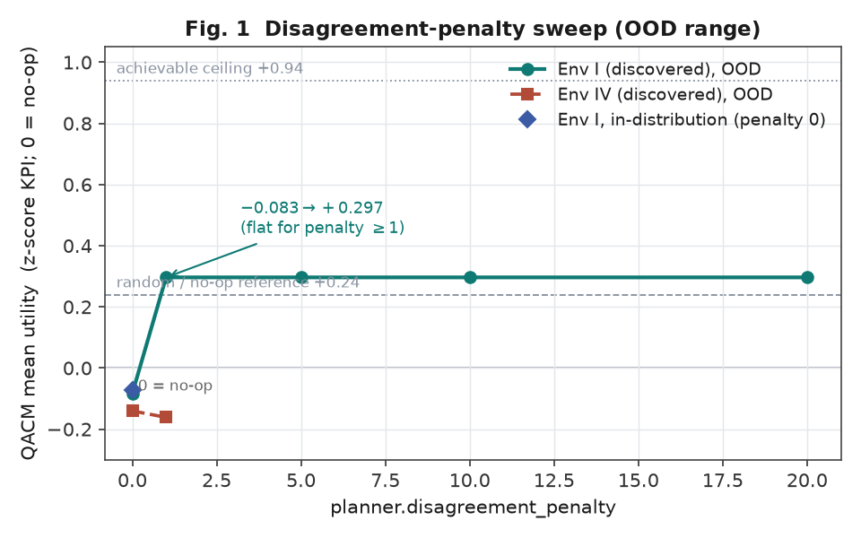
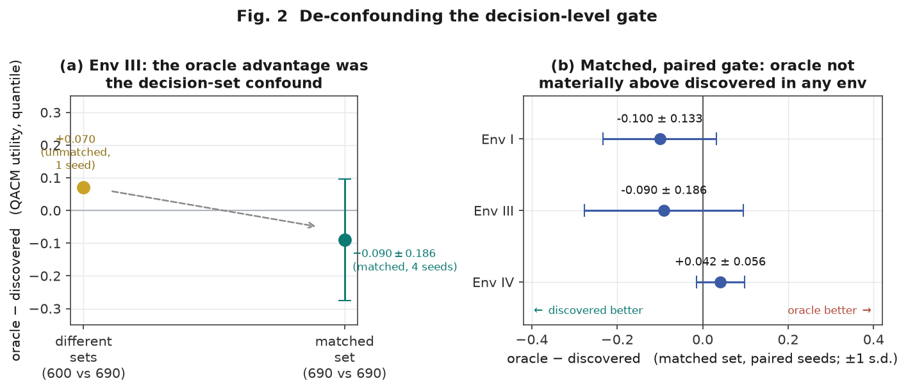
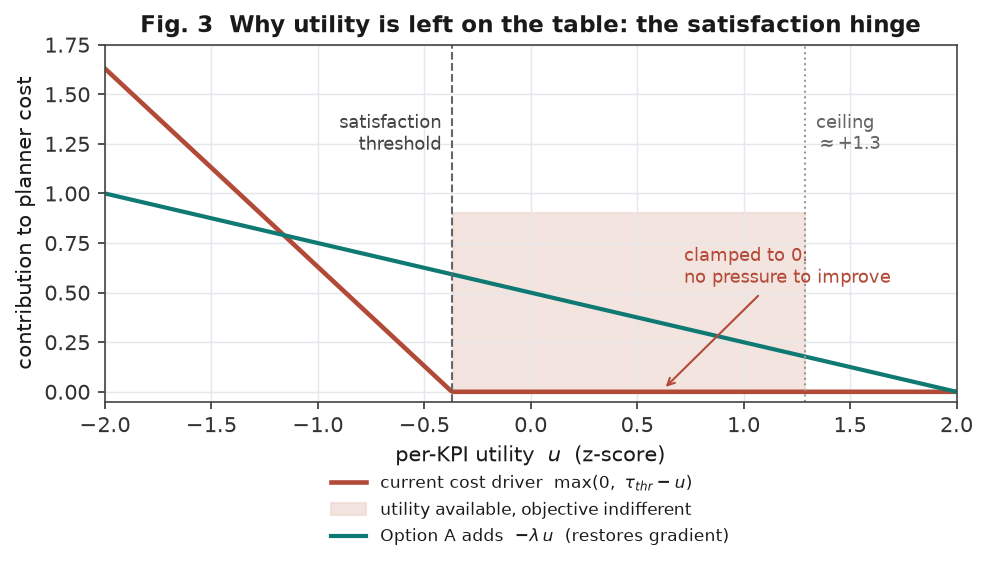
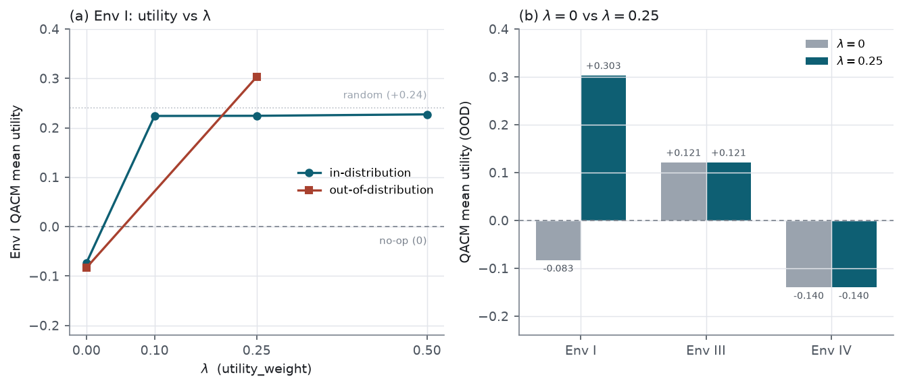

The 2026-08-24 gate compared the discovered and oracle (true-adjacency) world-model structures on QACM planning utility, but the two arms were scored on different conflict sets, because the enumeration graph that defines the conflict set is the structure itself (the true graph enumerates more conflicts: 300 vs. 270, 690 vs. 600, 570 vs. 420 for Env I/III/IV). We introduce a matched-decision-set evaluation — both structures scored on the true (oracle) conflict set — and repeat each cell over four mitigation seeds. Under this control the single environment that had favoured the oracle (Env III, +0.070) reverses to −0.090 ± 0.186, and across all three environments the oracle−discovered utility gap is not materially positive (Env I −0.100 ± 0.133; Env III −0.090 ± 0.186; Env IV +0.042 ± 0.056). Separately, we decompose the negative absolute utility into (a) out-of-distribution model exploitation, partially removable by an existing, self-measurable disagreement penalty on Env I (−0.083 → +0.297) but not on Env IV, and (b) a structure-independent limitation of the QACM objective, which becomes indifferent to utility once a conflict is nominally satisfied. We identify (b) as the dominant remaining cause and specify a minimal objective modification to address it.
The planner under study, QACM, performs a one-step grid search over candidate settings of a conflicted parameter, scoring each candidate by a cost computed from an 8-member model ensemble and keeping the minimum-cost candidate. The 2026-08-24 report established at the prediction level that the discovered graph generalizes out-of-distribution at least as well as the true graph. It then attempted a decision-level test — a 2×2 gate over {discovered, oracle} × {quantile, mean} aggregators — to determine whether investing in a structure learner (a differentiable DAG posterior with expected-utility planning) is warranted.
Two problems made that gate inconclusive:
conflicts.py: one conflict per graph edge from a KPI node to a parameter node).
The true graph contains more such edges than the learned graph recovers, so the oracle arm was
scored over a larger and different set of conflicts than the discovered arm. Utility means over
different decision populations are not comparable.mitigation_seed, giving no estimate of
seed-induced variance, so the one environment favouring the oracle (Env III, +0.070) could not be
distinguished from noise.Additionally, the absolute QACM utility was negative in Env I and Env IV. Utility here is a KPI z-score with 0 = no-op and an achievable ceiling near +0.94; a negative value indicates the planner performs worse than taking no action.
We added an evaluation-time option, --enum-source oracle, that installs the true-adjacency
enumeration graph as the conflict set for both structures, while leaving each structure's
prediction path unchanged (the planner's predictions are drawn from the posterior sampler, which does
not consult the enumeration graph). Concretely, the discovered arm is then asked to plan mitigation on
the true conflict set — including conflicts its own graph does not flag — using its own learned
dynamics. This isolates the quantity of interest, "how well does each world model plan on the same,
ground-truth decisions," from the confound of set size. The change reuses the existing graph-override
hook and does not alter prediction, aggregation, or seeding
(--enum-source, commit e52acbc; independently reviewed). A smoke test
confirmed the discovered arm's decision count moves from 270 to 300 on Env I when the option is set.
Each gate cell was repeated over four mitigation seeds (0–3). Because both arms use the same conflict set and the same seed, the per-seed oracle−discovered difference is a paired difference; we report its mean and sample standard deviation across seeds. MCTS simulation count was reduced to 2 for evaluation cost; QACM is unaffected by this (each planner is seeded by common random numbers, so its output is independent of the MCTS budget).
To separate model-error effects from objective effects, the discovered checkpoint was additionally
evaluated (i) on the in-distribution parameter range (evaluation_param_ranges: train),
where model error is small, and (ii) under a sweep of the planner's disagreement penalty
(planner.disagreement_penalty ∈ {0, 1, 5, 10, 20}), a self-measurable term that
penalizes actions on which the ensemble disagrees.
On the in-distribution range, QACM utility on Env I is −0.073 (penalty 0), close to its out-of-distribution value of −0.083. That the objective remains negative where the model is accurate indicates the negativity is not solely a model-error artifact. Enabling the disagreement penalty removes most of the out-of-distribution deficit on Env I: utility rises to +0.297 and is constant for all tested penalties ≥1 (Fig. 1). The same penalty does not help Env IV (−0.140 → −0.161).
The flat response for penalties ≥1 reflects saturation of a discrete argmin (the penalty term dominates the ranking above a small magnitude), not a degenerate policy: on the penalty≥1 Env I run, QACM selects 191 distinct actions across 210 decisions (modal action share 1.9%), with per-decision utility standard deviation 0.81 over the range [−1.47, +1.35] and 57% of decisions satisfied. The disagreement penalty's magnitude was not tuned on the reported test utility; adopting it would require a leakage-free selection protocol (Section 5), and the current result is reported as a sensitivity analysis rather than an adopted setting.

disagreement_penalty. Env I recovers from −0.083 to +0.297 at penalty ≥1 and
plateaus; Env IV (penalties 0 and 1 evaluated) remains negative. Reference lines: no-op (0),
random (+0.24), achievable ceiling (+0.94). The Env I in-distribution value at penalty 0 (diamond)
is close to its out-of-distribution value, indicating the deficit is only partly model-error.Scored on the true conflict set with paired seeds, the Env III gap reverses sign relative to the mismatched gate: from +0.070 (single seed, 600 vs. 690 decisions) to −0.090 ± 0.186 (four seeds, 690 vs. 690). The apparent oracle advantage in the 2026-08-24 gate is therefore attributable to the larger conflict set the oracle was scored on, not to a planning advantage of the true graph. Across all three environments the oracle−discovered gap is negative or, for Env IV, positive but smaller than its across-seed standard deviation (Fig. 2, Table 1).

| Env | ndec | discovered | oracle | oracle − discovered | prior (mismatched) |
|---|---|---|---|---|---|
| Env I | 300 | −0.218 ± 0.180 | −0.318 ± 0.193 | −0.100 ± 0.133 | −0.246 |
| Env III | 690 | +0.250 ± 0.342 | +0.160 ± 0.329 | −0.090 ± 0.186 | +0.070 |
| Env IV | 570 | +0.063 ± 0.320 | +0.104 ± 0.279 | +0.042 ± 0.056 | −0.145 |
Env IV is the one case in which the matched-set gap is positive; at +0.042 ± 0.056 (n=4, standard error ≈ 0.028) it is not distinguishable from zero and is small relative to the utility range. It does not meet the pre-registered condition for a positive result (a material, spread-exceeding advantage). Under the pre-registered decision rule — build a structure learner only if the oracle materially exceeds the discovered graph in matched, paired utility — the outcome across all three environments is not to pursue that direction. The mean aggregator was also evaluated (Env III) and did not change the ordering (mean gap −0.090; discovered mean−quantile difference −0.003 with a worse lower tail), so the risk-averse quantile aggregator is retained.
The residual negativity and the sub-ceiling utility on Env I share a structure-independent cause in the QACM cost. Per model member the candidate cost is
where, for each xApp, distance_i = max(0, τ_thr − u_i) is a hinge on the
per-KPI utility u_i against its satisfaction threshold. Below threshold the hinge
decreases with increasing utility, so minimizing cost does raise utility — but only up to the
threshold. At and above threshold the hinge is clamped to zero and the only remaining term is the
constant satisfaction bonus, so the objective is indifferent to how far above threshold the utility
sits. Because the candidate scan keeps the first minimum under a strict comparison, among
equally-satisfied candidates it retains the earliest-scanned rather than the highest-utility one. The
Env I satisfaction thresholds are low in z-space (e.g. KPI1 at −0.37) while the reachable
utility is near +1.3, so candidates are declared satisfied at mediocre utility and the objective
stops improving (Fig. 3). This effect is independent of the world model: it is present even with a
perfect model, which is consistent with the utility remaining negative in-distribution (Section 3.1)
and with the absence of any oracle advantage (Section 3.2).

We plan to add a standardized utility term to the per-member cost,
− λ · Σi signi · ui,
which restores a utility gradient above the satisfaction threshold (Fig. 3) while preserving the
satisfaction structure and the risk-averse quantile aggregation (the term sits inside each member's
cost, so the pessimistic quantile is retained and the objective does not become risk-neutral
expected-utility). Because utilities are standardized z-scores, λ is dimensionless
and comparable across environments. To avoid tuning on the reported quantities, λ
will be selected on a validation basis — the positive control environment (Env III) and the
in-distribution range — and then applied unchanged to the out-of-distribution evaluations of Env I and
Env IV; a zero-hyperparameter variant (a lexicographic tie-break that, among satisfied candidates,
prefers the highest-utility one) is available as a fallback that requires no tuning at all. The term
defaults to zero, reproducing current behaviour exactly. Validation will reuse the matched-decision-set
gate in-distribution and out-of-distribution, with Env III as a no-regression check; success is a
material movement of Env I/IV utility toward the +0.94 ceiling without degradation of the lower tail
or the satisfaction rate.
The objective modification of Section 5 was implemented and evaluated at the planner level on the
existing checkpoints (no retraining). Option A adds an additive standardized-utility term
− λ · Σi signi · ui inside the
per-member QACM cost, with λ = utility_weight defaulting to 0 so the
change is regression-safe and reproduces current behaviour exactly (committed as e7534e1).
The term restores a utility gradient past the satisfaction threshold, where the cost was previously flat
(Fig. 3). Because it stays inside each member's cost, the risk-averse quantile aggregator is preserved;
the objective does not become risk-neutral expected utility.
Leakage-free λ selection. On Env I in-distribution the effect is realized by
λ=0.1 and is then flat across λ ∈ [0.1, 0.5] (QACM mean
+0.2240, +0.2243, +0.2272 at λ = 0.1, 0.25, 0.5; identical satisfaction and tail), so the term is
knob-insensitive on the swept range. Env III in-distribution is invariant to λ (−0.1028 to
four decimals at every tested λ) and therefore does not regress at any λ. The value
λ*=0.25 was chosen on Env III and the in-distribution range only; the Env I and
Env IV out-of-distribution utilities were not consulted in the selection.

λ: the
in-distribution curve moves from −0.073 to +0.224 and saturates across
λ ∈ [0.1, 0.5]; the out-of-distribution points (evaluated at λ = 0 and
0.25 only) move from −0.083 to +0.303. (b) Out-of-distribution QACM mean at
λ=0 vs λ=0.25: Env I moves upward while Env III and Env IV are
unchanged. Reference lines: no-op (0), random (+0.24).
At λ=0.25 the Env I QACM mean utility moves from −0.083 to +0.303
out-of-distribution and from −0.073 to +0.224 in-distribution. The lower tail improves rather than
collapses (tail p10 −1.475 → −0.890 out-of-distribution, −1.526 → −0.896
in-distribution) and the satisfaction rate rises (0.42 → 0.58 out-of-distribution, 0.52 → 0.62
in-distribution). All three pre-registered success criteria — utility moves materially toward the
ceiling, the lower tail does not collapse, the satisfaction rate does not fall — are met.
Env III and Env IV are bit-identical at λ=0 and λ=0.25 (Env III
in-distribution −0.1028, out-of-distribution +0.1213; Env IV out-of-distribution −0.1402,
in-distribution −0.4116, unchanged at both λ). The term only engages the satisfied-flat
region, which these low-satisfaction environments (satisfaction rate 0.13–0.22) rarely reach, so
Option A neither helps nor harms them. Env IV's residual negative utility is a distinct, unresolved cause:
its in-distribution utility (−0.412) is worse than its out-of-distribution utility (−0.140),
so it is not the flat-region objective flaw and is not primarily out-of-distribution model exploitation.
Option A is not claimed to address Env IV; this remains an open item.
On the matched decision set (--enum-source oracle on both arms), the STOP verdict
(oracle not exceeding discovered) is preserved at λ=0.25 for all three environments.
Env III and Env IV are bit-identical to λ=0 in the matched gate, so their four-seed
gates equal the λ=0 baselines (Env III −0.090 ± 0.186, STOP; Env IV
+0.042 ± 0.056, STOP). Env I is the only λ-responsive environment: the fix lifts both arms,
and the four-seed paired oracle−discovered gap is +0.028 ± 0.086 — not material under
its across-seed spread, so the STOP verdict is preserved at higher absolute utility. Env III's positive
utility does not regress.
Separately, the disagreement penalty (Task 3) also improves Env I in-distribution utility, from −0.073 to +0.190 (satisfaction rate +0.10, tail improves), complementing its earlier out-of-distribution effect. This is reported as a sensitivity result only and is not adopted as a per-environment constant.
e52acbc — --enum-source for matched decision-set gate (feat/v2, reviewed).runs/Environment{I,III,IV}/cdl/…); no retraining.